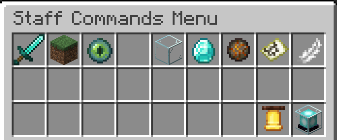
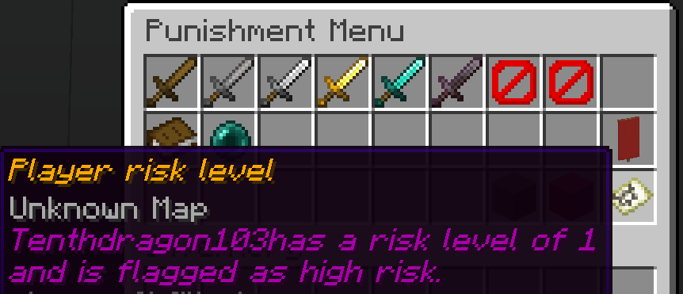
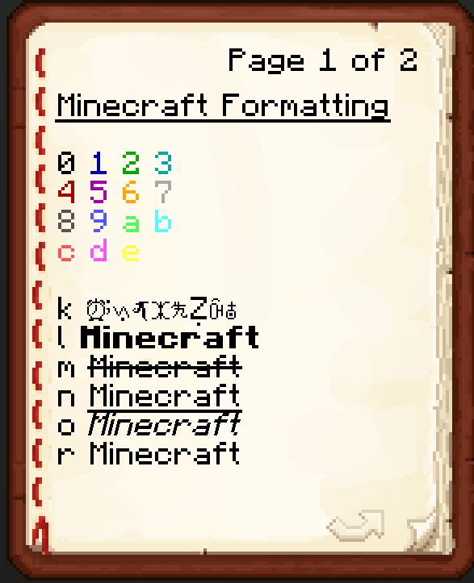
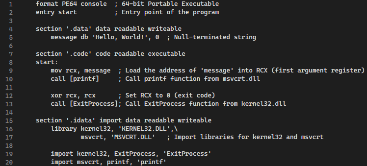

TStaffMode
Github description: A Minecraft Spigot plugin to save a staff member's inventory to a secure, crash proof, file and return items upon exiting staff mode. Wiki
Risk Level Manager
Github description: Minecraft Spigot plugin for staff to record and set a player's risk level and monitor activity.
Custom Book Json
Github description: Minecraft Spigot plugin to create and give written books with custom JSON data, use a book command creator and take the json and use it here.
No Bad Recipes
Github description: A Minecraft Paper plugin to detect if players put in a weird crafting recipe such as a backwards axe. On crafting the item the plugin will publicly shame the player and optionally ban them.
Assembly Printing
This was just a test project to try to figure out assembly, it is very basic and doesn't compile properly on FASM because the kernel libraries dont import.
Procedural Animation
This is a screenshot of my procedural animation project in Unity using C#, I created an army of spiders like this one to follow the player using realistic movement and contact with the ground.